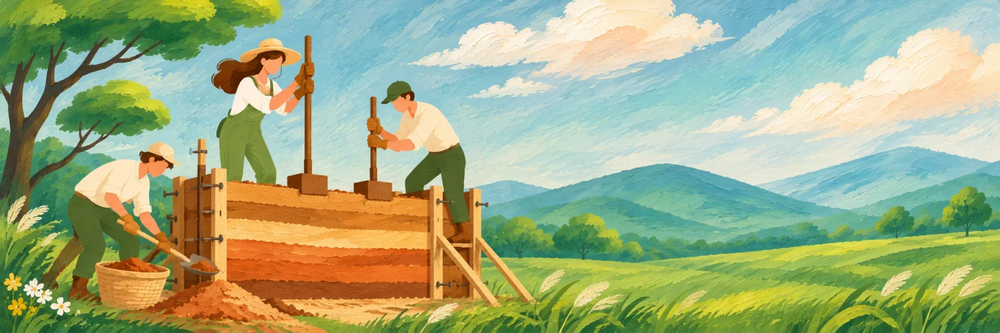

Прессованная земля —
стена в горизонтальнуюполоску
Местный суглинок засыпают в опалубку слоями по десять–пятнадцать сантиметров и трамбуют до звона; когда опалубку снимают, на стене остаются горизонтальные прожилки — след каждого утрамбованного слоя, запись рабочих дней в толще стены. Её не штукатурят: она сама себе отделка. Так сложены участки Великой стены и стены Альгамбры, простоявшие столетия, — и так сегодня строят винодельни, музеи и лаборатории. Красивая, тёплая, долговечная стена почти из ничего.
← Каталог технологий · Технология возведения 02
Стена, в которой виден каждый день работы
Прессованная земля — это, пожалуй, самая красивая из земляных технологий, и красота эта не декоративная, а честная. Местный суглинок засыпают в опалубку слоями и трамбуют до звона; когда опалубку снимают, на стене остаются горизонтальные прожилки — след каждого утрамбованного слоя, буквально запись рабочих дней в толще стены. Такую поверхность не штукатурят: она сама себе отделка.
У технологии внушительная родословная. Из трамбованной земли сложены участки Великой Китайской стены и стены Альгамбры, простоявшие столетия. Во французском языке у неё своё имя — pisé de terre. И сегодня, спустя тысячелетия, из прессованной земли строят не хижины, а винодельни, музеи и научные лаборатории — там, где ценят её вид, долговечность и ровный внутренний климат.
Ниже — как эту стену делают, за счёт чего она работает, откуда пришла и в чём её честные ограничения.
Как это устроено
Технология проста по идее и требовательна к рукам. Вдоль будущей стены ставят прочную опалубку — как для бетона. Внутрь засыпают слегка увлажённый грунт слоем в десять–пятнадцать сантиметров и трамбуют, пока слой не осядет вдвое и не начнёт отзываться звонким, плотным звуком. Затем следующий слой, и так до верха. Опалубку переставляют дальше — и стена растёт секция за секцией.
Грунт берут местный, чаще всего тот же суглинок из котлована; иногда в него добавляют немного извести или цемента — это называется стабилизированной прессованной землёй и делает стену прочнее и устойчивее к воде, но, как мы увидим, не бесплатно. Раньше трамбовали вручную, деревянными трамбовками; сегодня чаще пневматическими, что ускоряет работу в разы.
Результат снятия опалубки почти всегда производит впечатление: гладкая, плотная, тёплая на вид стена в горизонтальную полоску, готовая без всякой доводки. Отсюда и любовь к ней современных архитекторов — редкий материал, который является отделкой в момент возведения.
Почему это работает
Главная сила прессованной земли — её масса. Плотная земляная стена обладает огромной тепловой массой: она медленно вбирает тепло днём и медленно отдаёт его ночью. В континентальном климате с жаркими днями и холодными ночами такая стена работает как маховик температуры — внутри дома держится ровно, пока снаружи качается амплитуда. Это то самое запаздывание, ради которого тяжёлые стены и ценят.
Второе свойство тоньше: глина дышит. Земляная стена впитывает избыток влаги из воздуха и отдаёт его, когда становится сухо, — регулирует влажность в комнате без всяких приборов, естественным буфером. Отсюда репутация особенно здорового микроклимата в земляных домах.
И третье — прочность и покой. Утрамбованная земля не горит, не гниёт и не интересует насекомых; ей не нужна ни защита от огня, ни обработка от жучка. А воплощённая энергия у неё низкая — при условии, что грунт местный и стену не перегрузили цементом. В сумме получается стена, которая почти ничего не стоит планете и почти ничего не требует от хозяина после постройки.
Откуда это взялось
Трамбовать землю в стены человечество научилось независимо в разных концах света и очень давно. В Китае технология ханту использовалась тысячи лет — из трамбованной земли сложены целые участки ранней Великой стены. В мавританской Испании из тапиаль возведены стены и башни Альгамбры, стоящие с XIII–XIV веков. Долговечность здесь — не обещание, а исторический факт.
В Европе технология особенно прижилась в долине Роны под именем pisé de terre. В конце XVIII века лионец Франсуа Куантеро издал трактаты о строительстве из прессованной земли и открыл школу — во многом благодаря ему метод распространился по Франции и дальше, вплоть до Австралии, где у него до сих пор сильная традиция.
А в последние десятилетия прессованная земля вернулась в высокую архитектуру. Австрийский мастер Мартин Раух довёл её до уровня искусства: его огромный «травяной центр» Ricola в Швейцарии — один из крупнейших современных домов из трамбованной земли, доказавший, что из грунта можно строить не только красиво, но и в промышленном масштабе. Земляная стена перестала быть приметой бедности и стала приметой качества.
Плюсы и ограничения
Достоинства прессованной земли уже перечислены: местный материал и низкая воплощённая энергия, огромная тепловая масса, дышащая регуляция влажности, негорючесть и долговечность на столетия, и — редкий бонус — готовая, не требующая отделки поверхность необычайной красоты. Для многих климатов и участков это близко к идеальной стене.
Но ограничения серьёзны, и о них честнее сказать прямо. Первое: труд и опалубка. Поставить прочную опалубку и утрамбовать стену — долго и тяжело, а хорошая опалубка недёшева; это не технология «на коленке», как земля в мешках, а работа, требующая навыка и оборудования. Второе, важнейшее: масса — это не изоляция. Тяжёлая стена прекрасно запасает тепло, но плохо ему сопротивляется; в по-настоящему холодном климате одной прессованной земли мало — нужен либо дополнительный слой утепления, либо очень толстые стены. Тепловая масса выручает там, где важны суточные перепады, а не там, где долгая ровная зима.
Третье — ловушка стабилизации. Добавить цемент ради прочности и влагостойкости соблазнительно, но именно цемент и тащит за собой воплощённую энергию, ради снижения которой землю и выбирали. Чем больше цемента, тем меньше экологического смысла остаётся в земляной стене. И четвёртое: как и у других земляных технологий, у прессованной земли непростые отношения со строительными нормами и дефицит бригад, которые умеют её делать.
Итог: медленно, но на века
Прессованная земля — технология для тех, кто готов вложить труд сейчас, чтобы получить стену, которая почти ничего не потребует потом. Она медленнее и дороже в стройке, чем земля в мешках, и требует навыка, зато отдаёт редким сочетанием: красотой без отделки, здоровым климатом, долговечностью на столетия и низким следом для планеты — если не увлекаться цементом.
Её главный урок честен и полезен для всего каталога: тяжёлая стена — не универсальное добро, а инструмент под конкретную задачу. Там, где качается суточная амплитуда, прессованная земля бесподобна; там, где стоит долгая ровная зима, ей нужна помощь. Понимать эту разницу — и значит выбирать технологию не по красоте картинки, а по климату участка.